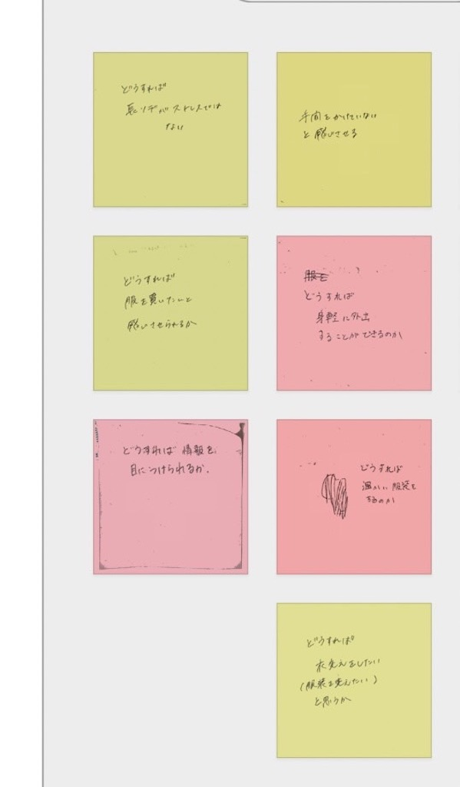
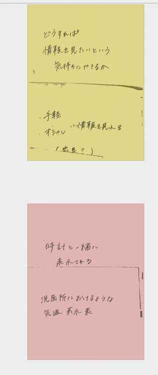
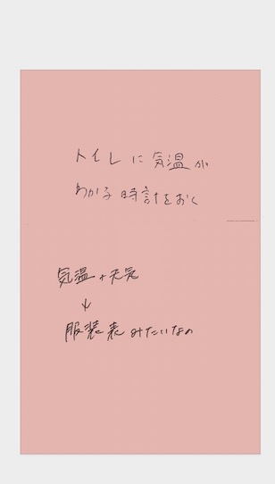
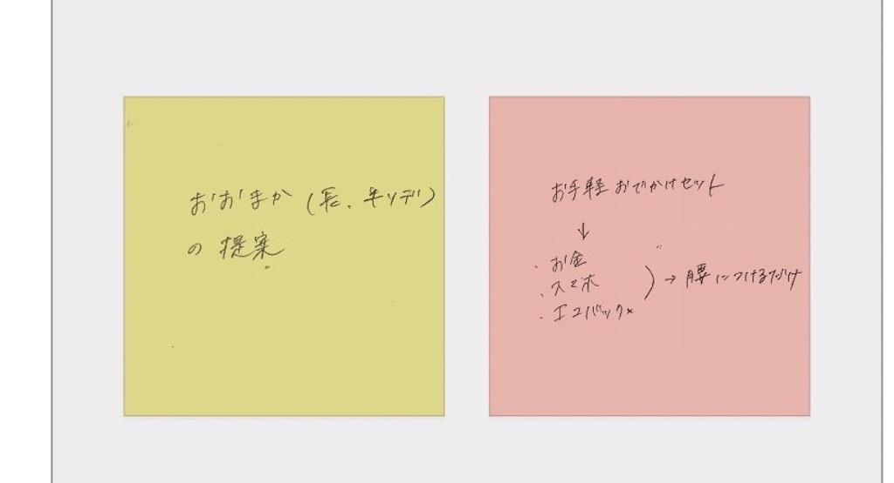
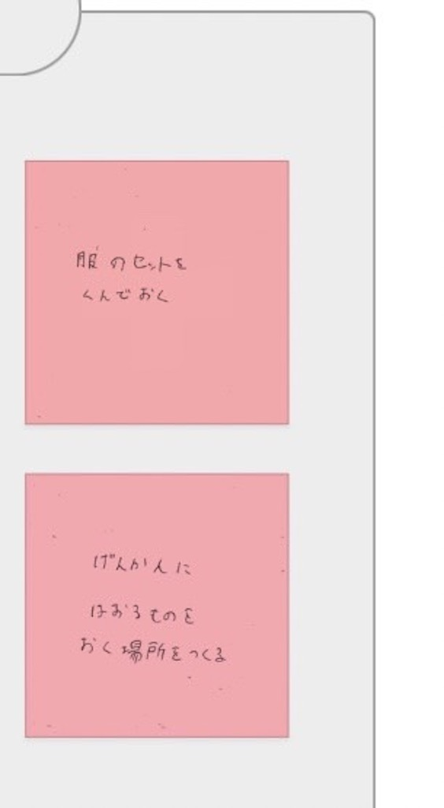
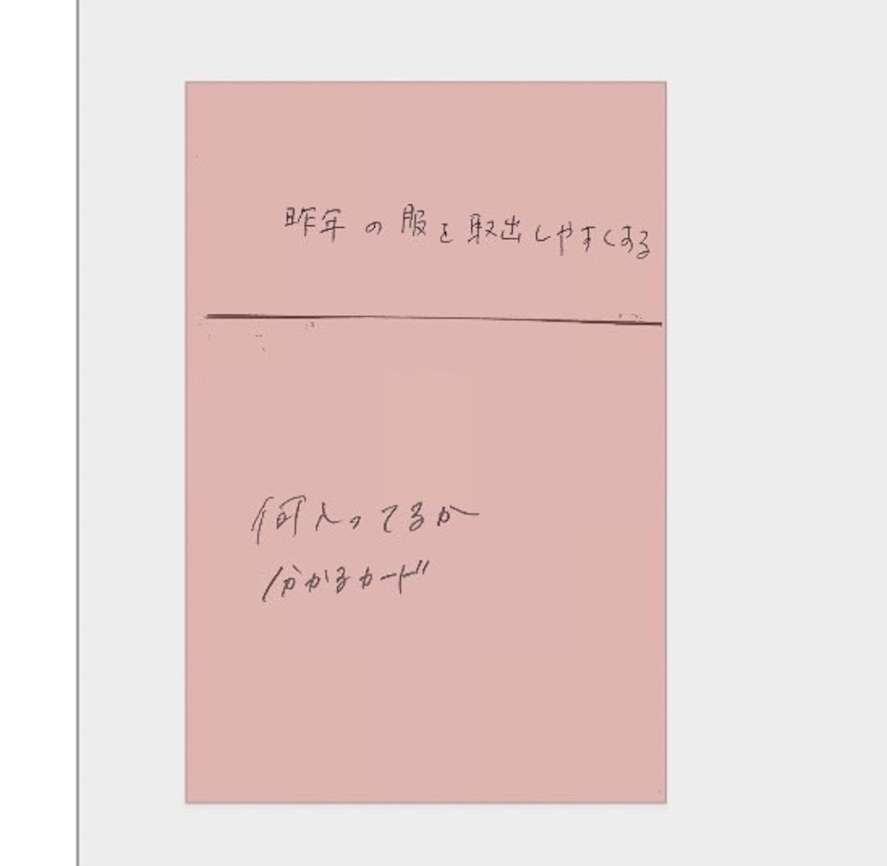

design for others プロトタイピング
班でのテーマ
気温が20度ほどの日に半袖半ズボンでドトールのホットドリンクを持って駅前で歩いている人がいた
Point of view
＜問題発見＞
- 私たちは半袖、半ズボンでホットドリンクを持って駅前を歩く人を見かけた
- 私たちは気温に対して半袖を着ていることと、さらにホットドリンクを持っていることに驚いた。
- この洞察に私たちに朝服装の情報を得ることが難しいのではないかという本当の問題を気づかせてくれた
- その人は情報を必要としている。
How might we..?
私たちはどうすればその人に情報を見たいという気持ちにさせることができるのか
HMWの写真


どうすれば情報に目が付くか

手間をかけないと考えさせる

どうすれば身軽に外出できるか

どうすれば衣替えをしたいと考えさせるか

実際に考えたもの
1＜段ボールの取っ手＞
情報を得るという前段階に、衣替えの大変さについて目を付けた
簡単に段ボールにつけられる取っ手があればいいのではないかと考えた
スケッチ
2＜ミニチュアクローゼット＞
温度はスマホで簡単に見れるという前提で、温度ごとにどういった服を着ればよいのかを事前に示しておける物があればよいのではないかと考えた
さらに、可愛さを足すことでより見たいという気持ちにさせることができるのではないか
＜スケッチ＞
反省点
3Dプリンターでのネジの作成が上手くいかなかった。また、設計の際にどのように3Dプリンターで出力をするかを考えていなかったために出力が大変だった。
fusionで作るときに印刷のイメージも一緒に持っておくようにしたい。